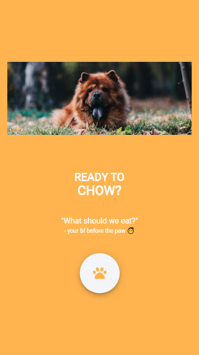

 Seanchaí January 5, 2021 This is the final project submitted, for my Master's in Creative Digital Media & UX at Technological University Dublin. It was created using Unity, C#, Blender, and FMOD amongst other tools Unity C# Game Dev Blender FMOD Mixamo Read more